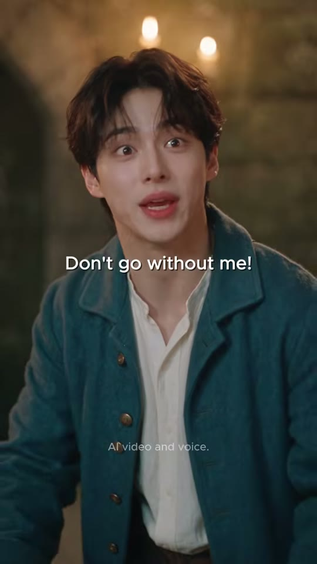
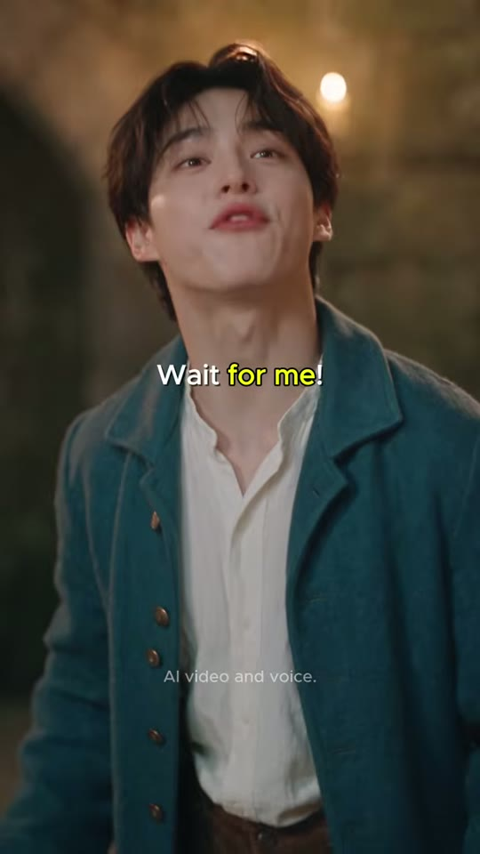
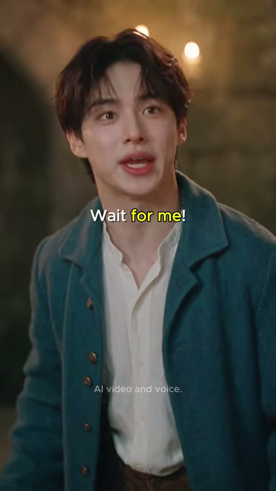
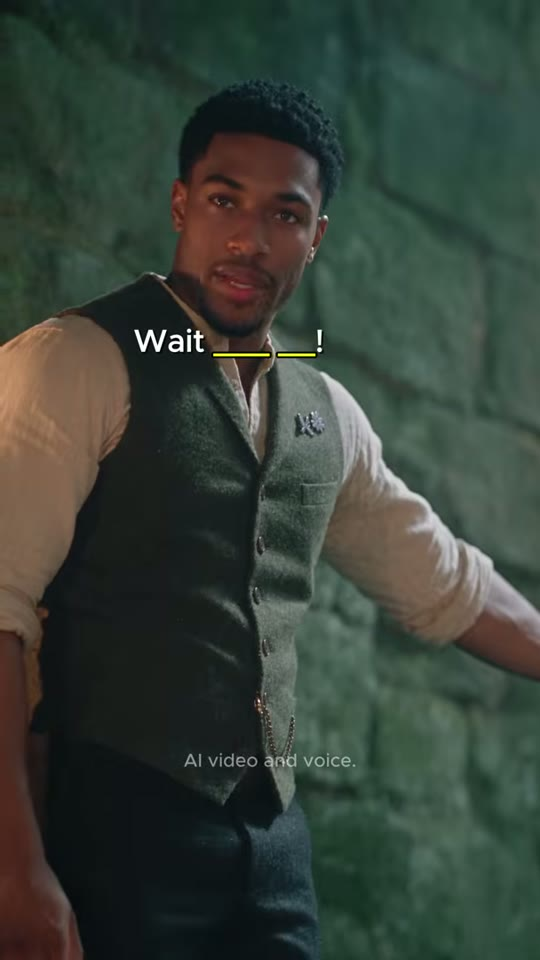
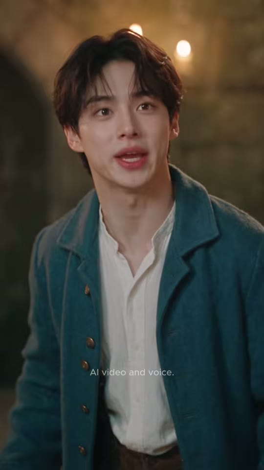
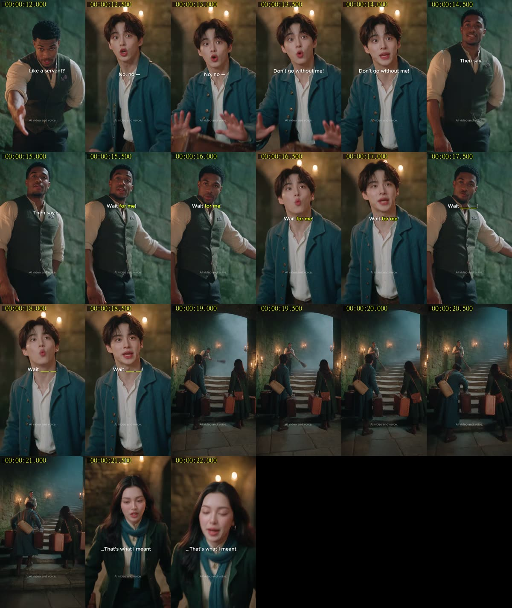

vkki 3위부키 세즈 EP.1 — 기다려 줘!(Wait for me)

Buki Says — EP.1 : Wait for Me!
조회수 1,510좋아요 19댓글 1업로드 2026-09-04길이 22.55초608x1080 · 24fps · 9:16 · -18.9 LUFS (LRA 7.2) · AAC 44.1kHz 스테레오
사라지는 판타지 계단 앞에서 남동생 부키가 누나의 오답 'Wait me'를 외쳤다가 계단지기가 '시중들라'로 오해해 절을 하고, 정답 'Wait for me'로 계단을 되찾는 22초 영어표현 미니드라마.
🔥 떡상 이유
- 세트 훅(0~3.7초 무대사 와이드): 촛불+청록 안개+사라지는 계단이라는 판타지 비주얼로 '무슨 상황?' 궁금증 → 스크롤 멈춤
- 오답 먼저 보여주기(Error-first learning): 한국인이 실제로 틀리는 'Wait me'를 먼저 외치게 해 공감 → 틀린 결과를 몸개그(집사 인사)로 보여줘 기억에 박힘
- 시각적 오해 개그(Literal-interpretation gag): 'wait on = 시중들다'를 계단지기의 과장된 절+손 내밀기로 번역 → 자막 없이도 웃김
- 핑퐁 리버스샷 가속(2.2s→0.8s→0.8s→0.7s): 정답 반복 구간에서 컷이 점점 짧아져 리듬감·몰입 상승
- 빈칸 퀴즈 자막('Wait ___ ___!'): 시청자가 속으로 정답을 채우게 하는 참여 장치 → 시청 지속·재시청
- 펀치라인 엔딩('...That's what I meant'): 틀린 누나가 아닌 척하는 체면 개그 = 캐릭터 관계 웃음, 댓글 유도
- 하드 엔드 루프: 페이드 없이 대사 끝에서 끊겨 0프레임 계단 와이드로 자연스럽게 재생 반복
hook0~3.7초 무대사 판타지 와이드(사라지는 계단+트렁크 든 남매) → 3.7초 'Noona — wait... what do I say?'로 미션 제시
conflict누나의 오답 'Wait me?' → 부키가 외침 → 계단지기가 'Wait on you? Like a servant?'로 오해(절+손 내밀기)
payoff부키 'Don't go without me!' → 계단지기 'Then say — Wait for me!' → 부키 복창 → 빈칸 퀴즈 2컷 → 안개 걷히고 계단 복원
loop누나 '...That's what I meant' 대사 직후 페이드 없이 하드 엔드 → 첫 프레임 계단 와이드로 이어져 루프처럼 보임. 빈칸 퀴즈가 한 번 더 보게 만듦
⏱ 편집 리듬
컷 수8평균 컷 길이2.82최단/최장0.67 / 10.88분당 컷21.29해석cuts.json 기준 8샷이지만 scdet 재측정(threshold 5) 결과 S1 내부 4컷(3.667/5.458/7.125/8.125s) + S8 내부 1컷(21.500s)이 추가로 있어 실제 화면 셋업은 13개(평균 1.73s, 분당 34.6컷). 도입 3.7s는 긴 와이드로 '공간'을 보여주고, 대사 구간은 1~2s 리버스샷, 정답 반복 구간(16.5~18.8s)은 0.67~0.83s 초단컷으로 가속, 마지막 2.7s 와이드로 호흡을 풀었다가 1s 펀치라인 CU로 끝냄. 모든 전환 하드컷.
🎨 스타일 바이블
룩실사 시네마틱 AI 영상(설명란 해시태그 #seedance25 #higgsfieldai → Higgsfield에서 Seedance 2.5로 생성 추정). 판타지 시대극(19세기풍 유럽 여행자 의상) 룩, 필름 그레인 약함, 피부 질감 자연스러움, 클로즈업은 얕은 심도조명키: 벽 촛불 스콘스의 따뜻한 앰버(약 2700K) 측면/림 라이트, 필: 계단 위에서 내려오는 차가운 청록 안개광(약 7000K), 틸&오렌지 대비. 클로즈업 배경 우상단에 촛불 보케 2~3개가 항상 존재. 전체 저조도(평균 휘도 약 50~64/255)색#23403C(이끼 낀 청록 석벽) · #2F6470(부키 틸 코트) · #1F3B2E(누나 포레스트그린 코트) · #E9A95A(촛불 앰버) · #8A4B2A(가죽 트렁크) · #EFE8DA(크림 셔츠/블라우스) · 자막 강조 #FFFF40렌즈와이드(1a/1e/8a): 24~28mm 상당(추정), f/4 이상 깊은 심도, 계단 소실점 중앙 배치. 클로즈업(인물 CU): 50~85mm 상당, f/1.8 얕은 심도(배경 석벽·촛불 보케 흐림). OTS 샷은 전경 인물 흐림으로 깊이감세트중세 판타지 석조 계단실: 거대한 아치형 석조 천장, 이끼 낀 녹청 석벽, 벽마다 철제 촛대(흰 기둥 초 2개씩), 넓고 닳은 회색 돌계단이 화면 중앙 소실점으로 올라가다 상단은 청록 안개 속으로 사라짐, 전경 돌바닥 판석. 소품: 빈티지 갈색 가죽 트렁크 3~4개, 짚 빗자루자막 스타일흰색 #FFFFFF 세미볼드 산세리프(Proxima Nova/Gilroy SemiBold 계열 추정 → 대체 Montserrat SemiBold 가로 90%), 1080 기준 약 34px(대문자+어센더 높이 약 25px), 가운데 정렬 1줄, 얇은 반투명 검정 외곽선+부드러운 드롭섀도. 핵심 표현만 노랑 #FFFF40(실측 RGB 255,255,64)으로 하이라이트(오답 'Wait me', 'Wait on you', 정답 'for me', 빈칸 '___ ___'). 위치는 고정 하단이 아니라 화자의 턱~목 높이(세로 35~61%, 대부분 39~49%)에 컷마다 배치, 가로도 얼굴 중심에 맞춰 38~55% 사이 이동. 등장/퇴장 애니메이션 없음(1프레임 팝), 문장 단위 교체, 대사 사이 0.1~0.3s 공백워터마크'AI video and voice.' — 화면 하단 중앙(x 50%, y≈79% = 855/1080), 약 17px 레귤러, 연회색 #C8CFD1 불투명도 약 70%, 0초~끝까지 고정(AI 생성 고지). 'vkki' 로고는 이 영상 화면에는 없음(설명란 서명만)
부키(Buki, 남동생·주인공) — 20세 전후 한국 남성, 앞머리 내린 짙은 갈색 머리, 큰 눈·과장된 O자 입 리액션. 틸 블루 울 프록코트(황동 단추), 흰 칼라리스 린넨 셔츠, 갈색 바지, 캔버스 크로스 가방. 영어를 '말해봐야' 하는 학습자 역할
캐릭터 시트 프롬프트Character sheet, front / three-quarter / profile, photorealistic: Buki: a handsome Korean young man about 20, fluffy dark-brown fringe hair falling over the eyebrows, fair skin, big expressive eyes, teal-blue wool frock coat with brass buttons and wide lapels, white collarless linen shirt open at the neck, brown trousers, leather strap of a canvas satchel across his chest, neutral grey studio backdrop, soft key light, 9:16
동물 버전 캐릭터Character sheet, front / three-quarter / profile: 햄찌 (Buki): a small golden-orange Syrian hamster boy standing upright with human-like posture, big glossy black eyes, puffy cheeks, soft realistic fur, wearing a tiny teal-blue wool frock coat with brass buttons, white collarless shirt, brown trousers, canvas satchel strap across the chest, photorealistic anthropomorphic animals with real fur detail and expressive animal faces, same live-action cinematic lighting as a Hollywood film, not cartoon, neutral grey backdrop, 9:16
누나(Noona, 친누나) — 20대 중반 한국 여성, 가운데 가르마 긴 웨이브 흑갈색 머리, 금 후프 귀걸이, 포레스트그린 울 코트, 크림 리브 블라우스+금 나뭇잎 브로치, 틸 니트 스카프, 체크 스커트, 갈색 크로스백. 아는 척 오답을 알려주는 얄미운 조언자
캐릭터 시트 프롬프트Character sheet, front / three-quarter / profile, photorealistic: Noona: a Korean woman in her mid-20s, long wavy dark-brown hair with center part, small gold hoop earrings, forest-green wool coat with brass buttons, cream ribbed high-neck blouse with a small gold leaf brooch, teal chunky knit scarf draped loosely around the neck and hanging long, dark green plaid skirt, brown leather crossbody bag, neutral grey studio backdrop, soft key light, 9:16
동물 버전 캐릭터Character sheet, front / three-quarter / profile: 햄누나 (Noona): a cream-and-white long-haired hamster girl, slightly taller than 햄찌, tiny gold hoop earrings, forest-green wool coat with brass buttons, cream ribbed blouse with a gold leaf brooch, teal knit scarf draped long, dark green plaid skirt, brown leather crossbody bag, photorealistic anthropomorphic animals with real fur detail and expressive animal faces, same live-action cinematic lighting as a Hollywood film, not cartoon, neutral grey backdrop, 9:16
계단지기(Stairkeeper) — 30세 전후 흑인 남성, 짧은 곱슬머리·다듬은 수염, 올리브 트위드 조끼(회중시계 체인·라일락 꽃 브로치), 소매 걷은 크림 린넨 셔츠, 짙은 바지, 짚 빗자루. 정답을 알려주는 선생님 겸 코믹한 오해 담당(vkki Show 다른 에피소드의 트레이너와 동일 배우 추정)
캐릭터 시트 프롬프트Character sheet, front / three-quarter / profile, photorealistic: the Stairkeeper: a tall athletic Black man about 30, short curly black hair, trimmed beard, olive-green tweed waistcoat with a brass pocket-watch chain and a small lilac flower brooch, cream linen shirt with sleeves rolled to the elbow, dark wool trousers, a rustic straw broom, neutral grey studio backdrop, soft key light, 9:16
동물 버전 캐릭터Character sheet, front / three-quarter / profile: 집사냥 (Stairkeeper): a large black-and-white tuxedo cat standing upright like a butler, about 1.5x taller than the hamsters, calm amber eyes, long white whiskers, olive-green tweed waistcoat with brass pocket-watch chain and a lilac flower brooch, cream linen shirt with rolled sleeves, dark trousers, straw broom, photorealistic anthropomorphic animals with real fur detail and expressive animal faces, same live-action cinematic lighting as a Hollywood film, not cartoon, neutral grey backdrop, 9:16
🔊 오디오
목소리AI 음성(설명란 'AI video and voice.'): 부키=밝고 약간 높은 20대 남성, 미국식 영어 + 'Noona' 한국어 호칭, 급하고 과장된 톤 / 누나=부드럽고 능청스러운 20대 여성, 'Hmm/Mhm' 여유 / 계단지기=따뜻한 저음 바리톤, 또박또박 선생님 톤. 대사는 대부분 컷 시작 0.1~0.2s 뒤에 시작BGM잔잔한 판타지 오케스트라(피치카토 현, 첼레스타/글로켄슈필, 하프) 약 90 BPM(추정). 대사 아래 -20dB 이상 낮게 깔림, 무음 구간 없음(측정 silences 없음). 18.8s 계단 복원 시 밝게 상승(추정)효과음0.0~3.7s 돌바닥 발소리·트렁크 내려놓는 쿵·빗자루 쓱쓱·촛불 앰비언스(추정)
10.0s 계단지기 인사 동작에 코믹 스팅(추정)
15.4s 정답 'Wait for me!' 순간 가벼운 반짝 효과(추정)
17.3~18.8s 빈칸 퀴즈 구간 틱 효과(추정)
18.8~21.5s 안개 걷힘 마법 쉬머 + 계단 오르는 발소리(추정)라우드니스-18.9TTS 팁부키: 20대 남성, 속도 1.05, 피치 +1, 'Noona'는 한국어 발음 그대로, 'Wait me!'는 자신만만 과장 / 누나: 여성, 'Mhm... Wait me?' 끝을 올리는 의문 억양, 마지막 'That's what I meant'는 시선 피하는 느낌으로 살짝 빠르고 낮게 / 계단지기: 저음 남성, 속도 0.95, 'Wait on you?' 정중한 의아함, 'Wait for me' 는 'for me'에 강세. minimax-h3로 컷별 립싱크 생성 시 대사 앞 0.1s 여유를 둘 것
BGM 생성 프롬프트Whimsical cinematic fantasy underscore, 90 BPM, pizzicato strings, celesta and glockenspiel sparkles, soft harp arpeggios, light woodwinds, mysterious but playful, gentle build with a magical shimmer rise at the end, no vocals, loopable 23 seconds
🎬 컷별 완전 분해 (8개)
컷 1 · 훅(0~3.7s: 신비한 세트+‘계단이 사라진다’ 상황 제시) → 문제 제기(뭐라고 말하지?) → 틀린 답
0.0s → 10.88s (10.88s)

1a 계단지기
1a 계단(소실점)
1b 부키 얼굴
1c 누나 얼굴
1e 부키(전경 좌)
1e 누나(전경 우)
1e 계단지기
샷EWS→MCU→MCU→MCU→WS (내부 5셋업)앵글아이레벨(계단 아래)→아이레벨 CU→계단 아래 OTS 로우카메라1a 고정+아주 느린 푸시인(추정) / 1b~1d 고정(미세 핸드헬드) / 1e 고정, 전경 인물 흐림구도⚠️ cuts.json은 1샷(0.00~10.88)으로 측정했지만 scdet 재측정 결과 내부 하드컷 4개(3.667 / 5.458 / 7.125 / 8.125s)가 있음 → 실제 5셋업. 1a(0.000~3.667, 3.667s): 아치형 석조 터널 속 계단 정면 와이드, 계단이 화면 중앙~상단 소실점으로 올라가 안개 속으로 사라짐, 계단지기는 중앙-좌측 1/3 지점 계단 중턱에서 빗자루질. 0.5s부터 누나가 좌측 전경→우측으로 트렁크를 들고 가로질러 등장, 1.0s 부키 좌측 전경 등장, 둘이 계단 아래 트렁크를 내려놓고 올려다봄(뒤·옆모습). 1b(3.667~5.458): 부키 MCU, 화면 좌측을 향한 옆모습→정면으로 고개 돌림, 얼굴은 상단 1/3선, 우상단 촛불 보케 2개. 1c(5.458~7.125): 누나 MCU 정면, 얼굴 중앙 상단, 좌상향으로 눈 굴리며 생각→능청스럽게 제안. 1d(7.125~8.125): 부키 MCU 정면, 계단 쪽(카메라 약간 우측 위) 향해 외침. 1e(8.125~10.875): 계단 아래에서 올려다보는 OTS 와이드 — 좌측 전경 부키(옆얼굴, 흐림), 우측 전경 누나(옆얼굴, 흐림), 하단 전경 트렁크 2개, 중앙 계단참 위 계단지기 전신(빗자루 기대 세움) → 10.0s경 한 발 내려오며 오른손을 손바닥 위로 내밀고 허리 숙여 '분부만 내리십쇼' 식 집사 인사.동작남매가 여행 트렁크를 들고 '사라지는 계단' 앞에 도착 → 부키가 누나에게 뭐라고 말해야 하냐고 묻고 → 누나가 '음…' 하고 눈을 굴리다 'Wait me?'라고 틀린 표현을 제안 → 부키가 자신만만하게 'Wait me!'라고 외침 → 계단지기가 그 말을 '(나를) 시중들라'로 오해한 듯 허리 숙여 손을 내미는 집사 인사.대사부키: "Noona, wait. What do I say?" / 누나: "Mhm. Wait me?" / 부키: "Wait me!" (계단지기는 무대사, 인사 동작만)화면 자막3.708~4.250 'Noona —'(흰) → 4.250~5.458 'wait... what do I say?'('wait...' 노랑) → 5.542~6.250 'Hmm...'(흰) → 6.250~7.042 'Wait me?'('Wait me' 노랑) → 7.375~8.333 'Wait me!'('Wait me' 노랑, 좌측 치우침 x≈38%) → 8.333~10.875 자막 없음들어오는 전환영상 시작(0프레임부터 바로 와이드, 페이드인 없음). 내부 컷 4개 모두 하드컷, 대사 시작 직전(약 0.1s 선행)에 컷 → 대사와 거의 싱크효과음/음악0~3.6s 돌바닥 발소리·트렁크 끄는 소리·빗자루 쓸리는 소리·촛불 앰비언스(추정), BGM 잔잔한 판타지 현악/첼레스타 시작(추정). 10.0s 계단지기 인사 때 짧은 '띠링' 코믹 스팅(추정)역할훅(0~3.7s: 신비한 세트+‘계단이 사라진다’ 상황 제시) → 문제 제기(뭐라고 말하지?) → 틀린 답 제시(Wait me) → 오답의 결과(집사 인사) 시각 개그
1순위
seedance-2-5원본 제작 모델 — 한 번의 생성으로 내부 5컷 멀티샷 재현(추정 제작 방식)
2순위
veo-3-11a/1e 와이드 분할 생성 시 안개·촛불 공간감 + 앰비언스
3순위
minimax-h31b~1d 대사 클로즈업을 개별 립싱크 컷으로 분할 생성할 때
① 이미지 프롬프트 (원본 클론)Extreme wide establishing shot from the bottom of a grand stone staircase, camera at eye level, the staircase rising to a vanishing point at upper center and dissolving into teal fog. Mid-staircase on the left third: the Stairkeeper: a tall athletic Black man about 30, short curly black hair, trimmed beard, olive-green tweed waistcoat with a brass pocket-watch chain and a small lilac flower brooch, cream linen shirt with sleeves rolled to the elbow, dark wool trousers, a rustic straw broom, sweeping a step with the broom, seen small in frame. In the left and right foreground: Buki: a handsome Korean young man about 20, fluffy dark-brown fringe hair falling over the eyebrows, fair skin, big expressive eyes, teal-blue wool frock coat with brass buttons and wide lapels, white collarless linen shirt open at the neck, brown trousers, leather strap of a canvas satchel across his chest and Noona: a Korean woman in her mid-20s, long wavy dark-brown hair with center part, small gold hoop earrings, forest-green wool coat with brass buttons, cream ribbed high-neck blouse with a small gold leaf brooch, teal chunky knit scarf draped loosely around the neck and hanging long, dark green plaid skirt, brown leather crossbody bag, both seen from behind, each setting down a vintage brown leather suitcase at the foot of the stairs and looking up. Empty flagstone floor fills the bottom 20% of frame. Set: inside a medieval fantasy stone stairwell under a massive vaulted stone arch, wide worn grey stone steps rising into the back of frame, mossy green-teal stone block walls, wrought-iron wall sconces holding lit white pillar candles with warm amber flicker (2700K), cool teal mist pouring down from the top of the stairs (top steps dissolve into fog), flagstone floor in the foreground. photorealistic cinematic live-action film still, vertical 9:16 (608x1080), teal-and-amber color contrast, soft volumetric haze, gentle film grain, natural skin texture, shallow depth of field on close-ups, AI-realism in the style of Seedance 2.5.
② 영상 프롬프트 (원본 클론)Seedance-style multi-shot sequence, 10.9 seconds total, 9:16, hard cuts inside the clip, candlelit fantasy stairwell. Shot A (0.0-3.67s): extreme wide from the foot of the stairs, very slow push-in; the Stairkeeper sweeps mid-stairs; the sister walks in from the left foreground carrying a leather suitcase, then the brother, both put suitcases down and look up at the fog-swallowed top steps. Ambient: footsteps on stone, broom swish, candle crackle. Shot B (3.67-5.46s): medium close-up of Buki in profile facing left, he turns to camera, anxious, lip-sync: "Noona— wait... what do I say?" Shot C (5.46-7.13s): medium close-up of Noona, eyes roll up to the left thinking, small smug smile, lip-sync: "Mhm... Wait me?" Shot D (7.13-8.13s): medium close-up of Buki, eyes wide, shouts confidently toward the stairs, lip-sync: "Wait me!" Shot E (8.13-10.88s): low wide over-the-shoulder from behind the siblings (both soft in the foreground left and right, suitcases at bottom), the Stairkeeper on the landing lets go of his broom, steps down and bows deeply with his right palm extended upward like a servant offering service. No speech in shot E. Warm candlelight vs cool teal fog, realistic skin, gentle handheld micro-motion.
③ 동물 버전 이미지 프롬프트Extreme wide establishing shot from the bottom of a grand stone staircase, eye level, staircase rising into teal fog. Mid-staircase: 집사냥 (Stairkeeper): a large black-and-white tuxedo cat standing upright like a butler, about 1.5x taller than the hamsters, calm amber eyes, long white whiskers, olive-green tweed waistcoat with brass pocket-watch chain and a lilac flower brooch, cream linen shirt with rolled sleeves, dark trousers, straw broom, sweeping. Foreground left and right: 햄찌 (Buki): a small golden-orange Syrian hamster boy standing upright with human-like posture, big glossy black eyes, puffy cheeks, soft realistic fur, wearing a tiny teal-blue wool frock coat with brass buttons, white collarless shirt, brown trousers, canvas satchel strap across the chest and 햄누나 (Noona): a cream-and-white long-haired hamster girl, slightly taller than 햄찌, tiny gold hoop earrings, forest-green wool coat with brass buttons, cream ribbed blouse with a gold leaf brooch, teal knit scarf draped long, dark green plaid skirt, brown leather crossbody bag, seen from behind, setting down tiny vintage leather suitcases and looking up. photorealistic anthropomorphic animals with real fur detail and expressive animal faces, same live-action cinematic lighting as a Hollywood film, not cartoon. Set: inside a medieval fantasy stone stairwell under a massive vaulted stone arch, wide worn grey stone steps rising into the back of frame, mossy green-teal stone block walls, wrought-iron wall sconces holding lit white pillar candles with warm amber flicker (2700K), cool teal mist pouring down from the top of the stairs (top steps dissolve into fog), flagstone floor in the foreground. photorealistic cinematic live-action film still, vertical 9:16 (608x1080), teal-and-amber color contrast, soft volumetric haze, gentle film grain, natural skin texture, shallow depth of field on close-ups, AI-realism in the style of Seedance 2.5.
④ 동물 버전 영상 프롬프트Same 5-shot structure and exact timings as the original (A 0-3.67s wide / B 3.67-5.46s 햄찌 MCU "Noona— wait... what do I say?" in a young squeaky-but-clear boy voice / C 5.46-7.13s 햄누나 MCU rolling eyes, whiskers twitching, "Mhm... Wait me?" / D 7.13-8.13s 햄찌 cheeks puffed, shouting "Wait me!" / E 8.13-10.88s over-the-shoulder low wide, the tuxedo cat Stairkeeper leans the broom, steps down and bows with one paw extended palm-up like a butler). Keep teal fog, candle bokeh, stone stairwell and lens choices identical; animals move with natural animal micro-motions (whisker twitch, ear flick, nose wiggle) while lip-syncing. 10.9 seconds, 9:16.
네거티브cartoon, anime, 3D render look, plastic skin, waxy face, extra fingers, deformed hands, fused fingers, warped face, crossed eyes, subtitles, text, logo, watermark, lowres, heavy motion blur on faces, flicker, frame jitter, horizontal 16:9 framing, letterbox, modern clothing, electric lights, sunlight, oversaturated colors || ANIMAL VERSION add: human faces on animals, human hands, humans, uncanny hybrid, stuffed toy look, chibi, big-head cartoon proportions
컷 2 · 오답 'Wait me'가 'wait on me(시중들다)'로 해석됐다는
10.88s → 12.67s (1.79s)


계단지기 얼굴
계단지기 상반신
내민 손
샷MCU앵글아이레벨(살짝 하이, 인물이 렌즈 쪽으로 숙임)카메라고정 + 인물이 카메라로 다가오며 자연 푸시인 효과구도계단지기 얼굴이 상단 1/3선(y≈25%)·중앙, 오른팔이 좌하단 대각선으로 렌즈 쪽까지 뻗음(손바닥 위). 시선은 카메라(=부키 시점) 정면. 배경 이끼 낀 녹청 석벽 흐림, 좌측 여백 없음 — 꽉 찬 인물동작허리 숙여 손바닥을 위로 한 채 오른손을 내민 집사 자세 유지, 눈썹 살짝 올리고 진지하게 되묻는 표정 → 'Like a servant?'에서 고개 약간 기울임. 조끼 왼가슴 라일락 꽃 브로치 보임.대사계단지기: "Wait on you? Like a servant?"화면 자막11.000~11.792 'Wait on you?'('Wait on you' 노랑, y≈48%) → 11.917~12.667 'Like a servant?'(흰)들어오는 전환하드컷(1e 와이드에서 인사하던 동작을 그대로 이어받는 액션 매치컷) — 컷 후 0.125s 뒤 대사 시작효과음/음악BGM 유지, 저음 남성 목소리. 옷깃 스치는 폴리(추정)역할오답 'Wait me'가 'wait on me(시중들다)'로 해석됐다는 정답 힌트 1 — 코믹한 오해의 펀치
1순위
minimax-h3대사 립싱크+음성 동시 생성, 무료 — 팀 기본
2순위
seedance-2-5원본 제작 모델(설명란 #seedance25) — 피부·촛불 보케 룩이 가장 동일
3순위
kling-v3-omni레퍼런스 캐릭터 일관성 + 립싱크 보정
① 이미지 프롬프트 (원본 클론)Medium close-up, eye level, subject bowing slightly toward the lens. the Stairkeeper: a tall athletic Black man about 30, short curly black hair, trimmed beard, olive-green tweed waistcoat with a brass pocket-watch chain and a small lilac flower brooch, cream linen shirt with sleeves rolled to the elbow, dark wool trousers, a rustic straw broom, leaning forward in a servant's bow, right arm stretched diagonally toward the lens with the palm open and facing up, eyebrows raised, looking straight into the camera. Background: out-of-focus mossy green stone wall, cool teal-green tone with warm candle rim light on the left cheek and shirt. Set: inside a medieval fantasy stone stairwell under a massive vaulted stone arch, wide worn grey stone steps rising into the back of frame, mossy green-teal stone block walls, wrought-iron wall sconces holding lit white pillar candles with warm amber flicker (2700K), cool teal mist pouring down from the top of the stairs (top steps dissolve into fog), flagstone floor in the foreground. photorealistic cinematic live-action film still, vertical 9:16 (608x1080), teal-and-amber color contrast, soft volumetric haze, gentle film grain, natural skin texture, shallow depth of field on close-ups, AI-realism in the style of Seedance 2.5.
② 영상 프롬프트 (원본 클론)1.8 seconds. The Stairkeeper holds a deep butler bow, right palm extended toward the camera, then tilts his head slightly, polite but puzzled. Lip-sync in a warm deep baritone, American English: "Wait on you? ... Like a servant?" Static camera, subtle handheld breathing, shallow depth of field.
③ 동물 버전 이미지 프롬프트Medium close-up, eye level, subject bowing toward the lens. 집사냥 (Stairkeeper): a large black-and-white tuxedo cat standing upright like a butler, about 1.5x taller than the hamsters, calm amber eyes, long white whiskers, olive-green tweed waistcoat with brass pocket-watch chain and a lilac flower brooch, cream linen shirt with rolled sleeves, dark trousers, straw broom, bowing like a butler, one white-socked front paw extended toward the lens palm-up, ears forward, amber eyes looking into the camera. photorealistic anthropomorphic animals with real fur detail and expressive animal faces, same live-action cinematic lighting as a Hollywood film, not cartoon. Background: blurred mossy green stone wall, warm candle rim light. Set: inside a medieval fantasy stone stairwell under a massive vaulted stone arch, wide worn grey stone steps rising into the back of frame, mossy green-teal stone block walls, wrought-iron wall sconces holding lit white pillar candles with warm amber flicker (2700K), cool teal mist pouring down from the top of the stairs (top steps dissolve into fog), flagstone floor in the foreground. photorealistic cinematic live-action film still, vertical 9:16 (608x1080), teal-and-amber color contrast, soft volumetric haze, gentle film grain, natural skin texture, shallow depth of field on close-ups, AI-realism in the style of Seedance 2.5.
④ 동물 버전 영상 프롬프트1.8 seconds. The tuxedo cat butler holds the bow with paw extended, whiskers forward, tilts head. Lip-sync in a warm deep male voice: "Wait on you? ... Like a servant?" Static camera, shallow depth of field.
네거티브cartoon, anime, 3D render look, plastic skin, waxy face, extra fingers, deformed hands, fused fingers, warped face, crossed eyes, subtitles, text, logo, watermark, lowres, heavy motion blur on faces, flicker, frame jitter, horizontal 16:9 framing, letterbox, modern clothing, electric lights, sunlight, oversaturated colors || ANIMAL VERSION add: human faces on animals, human hands, humans, uncanny hybrid, stuffed toy look, chibi, big-head cartoon proportions
컷 3 · 진짜 의도 설명 — '나 두고 가지 마' = 정답의 의미 제시
12.67s → 14.29s (1.63s)


부키 얼굴
양손(전경)
트렁크(전경)
샷MCU앵글아이레벨 정면카메라고정(미세 핸드헬드)구도부키 얼굴이 상단 1/3 중앙(y≈20~35%), 양손이 하단 좌우 전경(y≈62~85%)에서 손바닥을 카메라로 향해 흔듦, 최하단에 트렁크 모서리(초점 밖). 우상단 촛불 보케 2개, 좌측 어두운 아치동작눈 크게 뜨고 입 O자로 모은 당황 표정, 양손 손바닥 펴서 좌우로 흔들며 '아니아니' 부정 → 절박하게 'Don't go without me!'대사부키: "No, no, no. Don't go without me."화면 자막12.708~13.458 'No, no —'(흰, y≈49%) → 13.458~14.417 'Don't go without me!'(흰) — 이 자막은 다음 컷(S4) 첫 0.125s까지 걸쳐 남음들어오는 전환하드컷(질문 → 즉각 부정 리액션 컷)효과음/음악BGM 유지, 손동작 휙 소리(추정)역할진짜 의도 설명 — '나 두고 가지 마' = 정답의 의미 제시
1순위
seedance-2-5원본과 동일 모델, 과장된 표정 미세연기(O자 입·눈 커짐) 재현력 최고
2순위
minimax-h3짧은 대사 립싱크+오디오 한 번에
3순위
kling-v3클로즈업 표정 안정성
① 이미지 프롬프트 (원본 클론)Medium close-up, eye level, frontal. Buki: a handsome Korean young man about 20, fluffy dark-brown fringe hair falling over the eyebrows, fair skin, big expressive eyes, teal-blue wool frock coat with brass buttons and wide lapels, white collarless linen shirt open at the neck, brown trousers, leather strap of a canvas satchel across his chest, eyes wide open in panic, lips rounded into an O, both hands raised in the foreground with palms facing the camera in a 'no, no' gesture. The edge of a vintage leather suitcase is out of focus at the very bottom. background: out-of-focus mossy stone wall and a dark stone archway with 2-3 glowing candle-flame bokeh balls in the upper right, warm amber rim light from candles, cool fill Set: inside a medieval fantasy stone stairwell under a massive vaulted stone arch, wide worn grey stone steps rising into the back of frame, mossy green-teal stone block walls, wrought-iron wall sconces holding lit white pillar candles with warm amber flicker (2700K), cool teal mist pouring down from the top of the stairs (top steps dissolve into fog), flagstone floor in the foreground. photorealistic cinematic live-action film still, vertical 9:16 (608x1080), teal-and-amber color contrast, soft volumetric haze, gentle film grain, natural skin texture, shallow depth of field on close-ups, AI-realism in the style of Seedance 2.5.
② 영상 프롬프트 (원본 클론)1.6 seconds. Buki waves both open palms side to side at the camera, panicked, then pleads. Lip-sync, young male voice, American English with slight Korean warmth: "No, no, no— Don't go without me!" Static camera with slight handheld, hands slightly motion-blurred, face sharp.
③ 동물 버전 이미지 프롬프트Medium close-up, eye level, frontal. 햄찌 (Buki): a small golden-orange Syrian hamster boy standing upright with human-like posture, big glossy black eyes, puffy cheeks, soft realistic fur, wearing a tiny teal-blue wool frock coat with brass buttons, white collarless shirt, brown trousers, canvas satchel strap across the chest, eyes wide, mouth open in an O, both tiny pink paws raised toward the camera waving 'no, no'. photorealistic anthropomorphic animals with real fur detail and expressive animal faces, same live-action cinematic lighting as a Hollywood film, not cartoon. A tiny leather suitcase edge in the blurred foreground. background: out-of-focus mossy stone wall and a dark stone archway with 2-3 glowing candle-flame bokeh balls in the upper right, warm amber rim light from candles, cool fill Set: inside a medieval fantasy stone stairwell under a massive vaulted stone arch, wide worn grey stone steps rising into the back of frame, mossy green-teal stone block walls, wrought-iron wall sconces holding lit white pillar candles with warm amber flicker (2700K), cool teal mist pouring down from the top of the stairs (top steps dissolve into fog), flagstone floor in the foreground. photorealistic cinematic live-action film still, vertical 9:16 (608x1080), teal-and-amber color contrast, soft volumetric haze, gentle film grain, natural skin texture, shallow depth of field on close-ups, AI-realism in the style of Seedance 2.5.
④ 동물 버전 영상 프롬프트1.6 seconds. 햄찌 waves both tiny paws frantically, cheeks puffing, whiskers trembling. Lip-sync: "No, no, no— Don't go without me!" Static camera, face sharp.
네거티브cartoon, anime, 3D render look, plastic skin, waxy face, extra fingers, deformed hands, fused fingers, warped face, crossed eyes, subtitles, text, logo, watermark, lowres, heavy motion blur on faces, flicker, frame jitter, horizontal 16:9 framing, letterbox, modern clothing, electric lights, sunlight, oversaturated colors || ANIMAL VERSION add: human faces on animals, human hands, humans, uncanny hybrid, stuffed toy look, chibi, big-head cartoon proportions
컷 4 · 정답 제시(Wait FOR me) — 교육 포인트
14.29s → 16.5s (2.21s)

계단지기 얼굴
계단지기 상반신
샷MS(웨이스트)앵글아이레벨, 약간 로우(추정)카메라고정 → 인물이 몸을 세우며 프레임 안에서 재배치구도시작: 계단지기 허리 숙여 손 내민 상태(S2와 연속) → 몸을 펴고 화면 좌측 1/3에 상체, 얼굴 상단(y≈10~25%), 왼팔을 우측으로 뻗어 계단 방향을 안내(우측 1/3 여백으로 시선 유도). 배경 이끼 석벽동작허리를 펴며 미소 → 왼팔을 옆으로 벌려 '자, 이렇게 말해봐' 제스처, 'Then say — Wait for me!'를 또박또박 시범 발음(선생님 톤).대사계단지기: "Then say, 'Wait for me.'"화면 자막14.292~14.417 'Don't go without me!'(이전 컷에서 이월) → 14.542~15.375 'Then say —'(흰, y≈40%) → 15.375~16.292 'Wait for me!'('for me' 노랑, y≈36%, x≈42%)들어오는 전환하드컷 + 자막 L컷(이전 대사 자막이 0.125s 넘어옴)효과음/음악BGM 유지, 정답 공개 순간 가벼운 상승음(추정)역할정답 제시(Wait FOR me) — 교육 포인트
1순위
minimax-h3대사 립싱크+음성 동시 생성, 무료 — 팀 기본
2순위
seedance-2-5원본 제작 모델(설명란 #seedance25) — 피부·촛불 보케 룩이 가장 동일
3순위
kling-v3-omni레퍼런스 캐릭터 일관성 + 립싱크 보정
① 이미지 프롬프트 (원본 클론)Medium waist-up shot, eye level. the Stairkeeper: a tall athletic Black man about 30, short curly black hair, trimmed beard, olive-green tweed waistcoat with a brass pocket-watch chain and a small lilac flower brooch, cream linen shirt with sleeves rolled to the elbow, dark wool trousers, a rustic straw broom, standing upright against the wall, warm friendly smile, left arm extended sideways to frame right presenting the staircase like a teacher. Background: out-of-focus mossy green stone blocks, candle rim light on shoulder and face, cool green ambient. Set: inside a medieval fantasy stone stairwell under a massive vaulted stone arch, wide worn grey stone steps rising into the back of frame, mossy green-teal stone block walls, wrought-iron wall sconces holding lit white pillar candles with warm amber flicker (2700K), cool teal mist pouring down from the top of the stairs (top steps dissolve into fog), flagstone floor in the foreground. photorealistic cinematic live-action film still, vertical 9:16 (608x1080), teal-and-amber color contrast, soft volumetric haze, gentle film grain, natural skin texture, shallow depth of field on close-ups, AI-realism in the style of Seedance 2.5.
② 영상 프롬프트 (원본 클론)2.2 seconds. The Stairkeeper rises from his bow, smiles and opens his left arm toward the stairs, coaching. Lip-sync, warm deep baritone, clear teacher-like articulation: "Then say— 'Wait for me!'" Static camera, slight parallax.
③ 동물 버전 이미지 프롬프트Medium waist-up shot, eye level. 집사냥 (Stairkeeper): a large black-and-white tuxedo cat standing upright like a butler, about 1.5x taller than the hamsters, calm amber eyes, long white whiskers, olive-green tweed waistcoat with brass pocket-watch chain and a lilac flower brooch, cream linen shirt with rolled sleeves, dark trousers, straw broom, standing upright, gentle smile, one paw extended sideways presenting the staircase. photorealistic anthropomorphic animals with real fur detail and expressive animal faces, same live-action cinematic lighting as a Hollywood film, not cartoon. Background: blurred mossy green stone wall, candle rim light. Set: inside a medieval fantasy stone stairwell under a massive vaulted stone arch, wide worn grey stone steps rising into the back of frame, mossy green-teal stone block walls, wrought-iron wall sconces holding lit white pillar candles with warm amber flicker (2700K), cool teal mist pouring down from the top of the stairs (top steps dissolve into fog), flagstone floor in the foreground. photorealistic cinematic live-action film still, vertical 9:16 (608x1080), teal-and-amber color contrast, soft volumetric haze, gentle film grain, natural skin texture, shallow depth of field on close-ups, AI-realism in the style of Seedance 2.5.
④ 동물 버전 영상 프롬프트2.2 seconds. The tuxedo cat rises from the bow, smiles (slow blink), opens one paw toward the stairs. Lip-sync, warm deep voice: "Then say— 'Wait for me!'" Static camera.
네거티브cartoon, anime, 3D render look, plastic skin, waxy face, extra fingers, deformed hands, fused fingers, warped face, crossed eyes, subtitles, text, logo, watermark, lowres, heavy motion blur on faces, flicker, frame jitter, horizontal 16:9 framing, letterbox, modern clothing, electric lights, sunlight, oversaturated colors || ANIMAL VERSION add: human faces on animals, human hands, humans, uncanny hybrid, stuffed toy look, chibi, big-head cartoon proportions
컷 5 · 리피트(따라 말하기) — 학습 강화 1회차
16.5s → 17.29s (0.79s)


부키 얼굴
부키 상반신
샷MCU앵글살짝 로우(턱을 든 인물)카메라고정구도부키 얼굴 상단 중앙(y≈8~33%), 턱 들고 위(계단 쪽)를 봄, 코트 앞섶이 화면 하단 2/3 채움. 우상단 촛불 보케 1개동작턱을 들고 가슴 펴며 자신 있게 'Wait for me!' 외침(따라 말하기) — 뿌듯한 표정.대사부키: "Wait for me!"화면 자막16.542~17.292 'Wait for me!'('for me' 노랑, y≈44%)들어오는 전환하드컷(시범 → 따라 하기 샷/리버스 샷)효과음/음악BGM 유지역할리피트(따라 말하기) — 학습 강화 1회차
1순위
minimax-h3대사 립싱크+음성 동시 생성, 무료 — 팀 기본
2순위
seedance-2-5원본 제작 모델(설명란 #seedance25) — 피부·촛불 보케 룩이 가장 동일
3순위
kling-v3-omni레퍼런스 캐릭터 일관성 + 립싱크 보정
① 이미지 프롬프트 (원본 클론)Medium close-up, slightly low angle. Buki: a handsome Korean young man about 20, fluffy dark-brown fringe hair falling over the eyebrows, fair skin, big expressive eyes, teal-blue wool frock coat with brass buttons and wide lapels, white collarless linen shirt open at the neck, brown trousers, leather strap of a canvas satchel across his chest, chin raised proudly, chest out, looking up toward the stairs above the camera, mouth open mid-shout. background: out-of-focus mossy stone wall and a dark stone archway with 2-3 glowing candle-flame bokeh balls in the upper right, warm amber rim light from candles, cool fill Set: inside a medieval fantasy stone stairwell under a massive vaulted stone arch, wide worn grey stone steps rising into the back of frame, mossy green-teal stone block walls, wrought-iron wall sconces holding lit white pillar candles with warm amber flicker (2700K), cool teal mist pouring down from the top of the stairs (top steps dissolve into fog), flagstone floor in the foreground. photorealistic cinematic live-action film still, vertical 9:16 (608x1080), teal-and-amber color contrast, soft volumetric haze, gentle film grain, natural skin texture, shallow depth of field on close-ups, AI-realism in the style of Seedance 2.5.
② 영상 프롬프트 (원본 클론)0.8 seconds. Buki lifts his chin and shouts proudly upward. Lip-sync: "Wait for me!" Static camera.
③ 동물 버전 이미지 프롬프트Medium close-up, slightly low angle. 햄찌 (Buki): a small golden-orange Syrian hamster boy standing upright with human-like posture, big glossy black eyes, puffy cheeks, soft realistic fur, wearing a tiny teal-blue wool frock coat with brass buttons, white collarless shirt, brown trousers, canvas satchel strap across the chest, chin raised proudly, chest puffed, shouting upward. photorealistic anthropomorphic animals with real fur detail and expressive animal faces, same live-action cinematic lighting as a Hollywood film, not cartoon. background: out-of-focus mossy stone wall and a dark stone archway with 2-3 glowing candle-flame bokeh balls in the upper right, warm amber rim light from candles, cool fill Set: inside a medieval fantasy stone stairwell under a massive vaulted stone arch, wide worn grey stone steps rising into the back of frame, mossy green-teal stone block walls, wrought-iron wall sconces holding lit white pillar candles with warm amber flicker (2700K), cool teal mist pouring down from the top of the stairs (top steps dissolve into fog), flagstone floor in the foreground. photorealistic cinematic live-action film still, vertical 9:16 (608x1080), teal-and-amber color contrast, soft volumetric haze, gentle film grain, natural skin texture, shallow depth of field on close-ups, AI-realism in the style of Seedance 2.5.
④ 동물 버전 영상 프롬프트0.8 seconds. 햄찌 puffs his chest and shouts proudly upward: "Wait for me!" Static camera.
네거티브cartoon, anime, 3D render look, plastic skin, waxy face, extra fingers, deformed hands, fused fingers, warped face, crossed eyes, subtitles, text, logo, watermark, lowres, heavy motion blur on faces, flicker, frame jitter, horizontal 16:9 framing, letterbox, modern clothing, electric lights, sunlight, oversaturated colors || ANIMAL VERSION add: human faces on animals, human hands, humans, uncanny hybrid, stuffed toy look, chibi, big-head cartoon proportions
컷 6 · 시청자 참여형 빈칸 퀴즈 — 속으로 'for me'를 채우게 만드는 인터랙션(리텐션)
17.29s → 18.13s (0.83s)


계단지기 얼굴
계단지기 상반신
샷MS(웨이스트)앵글아이레벨카메라고정(S4와 동일 셋업 재사용)구도S4 끝 구도와 동일: 계단지기 좌측 1/3, 얼굴 상단, 왼팔 우측으로 뻗음동작입 모양으로 'Wait…'를 반복 시범하는 듯한 입술 움직임, 미소 유지(대사 음성은 거의 없음/속삭임 추정).대사(무대사 또는 입모양만 — 시청자 빈칸 퀴즈 구간, 추정)화면 자막17.292~18.125 'Wait ___ ___!'(빈칸 밑줄 2개가 노랑, y≈36%)들어오는 전환하드컷(리버스 샷 핑퐁 가속 시작)효과음/음악BGM 유지, 퀴즈 '틱' 효과음 가능(추정)역할시청자 참여형 빈칸 퀴즈 — 속으로 'for me'를 채우게 만드는 인터랙션(리텐션)
1순위
seedance-2-5원본과 동일 모델, 과장된 표정 미세연기(O자 입·눈 커짐) 재현력 최고
2순위
minimax-h3짧은 대사 립싱크+오디오 한 번에
3순위
kling-v3클로즈업 표정 안정성
① 이미지 프롬프트 (원본 클론)Medium waist-up shot, eye level. the Stairkeeper: a tall athletic Black man about 30, short curly black hair, trimmed beard, olive-green tweed waistcoat with a brass pocket-watch chain and a small lilac flower brooch, cream linen shirt with sleeves rolled to the elbow, dark wool trousers, a rustic straw broom, standing, left arm extended to frame right, lips parted as if mouthing 'Wait...', encouraging smile. Background: blurred mossy green stone wall, candle rim light. Set: inside a medieval fantasy stone stairwell under a massive vaulted stone arch, wide worn grey stone steps rising into the back of frame, mossy green-teal stone block walls, wrought-iron wall sconces holding lit white pillar candles with warm amber flicker (2700K), cool teal mist pouring down from the top of the stairs (top steps dissolve into fog), flagstone floor in the foreground. photorealistic cinematic live-action film still, vertical 9:16 (608x1080), teal-and-amber color contrast, soft volumetric haze, gentle film grain, natural skin texture, shallow depth of field on close-ups, AI-realism in the style of Seedance 2.5.
② 영상 프롬프트 (원본 클론)0.8 seconds. The Stairkeeper silently mouths 'Wait...' with an encouraging nod, arm still presenting the stairs. No audible speech. Static camera.
③ 동물 버전 이미지 프롬프트Medium waist-up shot, eye level. 집사냥 (Stairkeeper): a large black-and-white tuxedo cat standing upright like a butler, about 1.5x taller than the hamsters, calm amber eyes, long white whiskers, olive-green tweed waistcoat with brass pocket-watch chain and a lilac flower brooch, cream linen shirt with rolled sleeves, dark trousers, straw broom, one paw extended to frame right, mouth slightly open mouthing, encouraging slow blink. photorealistic anthropomorphic animals with real fur detail and expressive animal faces, same live-action cinematic lighting as a Hollywood film, not cartoon. Blurred mossy stone wall background. Set: inside a medieval fantasy stone stairwell under a massive vaulted stone arch, wide worn grey stone steps rising into the back of frame, mossy green-teal stone block walls, wrought-iron wall sconces holding lit white pillar candles with warm amber flicker (2700K), cool teal mist pouring down from the top of the stairs (top steps dissolve into fog), flagstone floor in the foreground. photorealistic cinematic live-action film still, vertical 9:16 (608x1080), teal-and-amber color contrast, soft volumetric haze, gentle film grain, natural skin texture, shallow depth of field on close-ups, AI-realism in the style of Seedance 2.5.
④ 동물 버전 영상 프롬프트0.8 seconds. The tuxedo cat silently mouths 'Wait...' and nods encouragingly, whiskers forward. No audible speech. Static camera.
네거티브cartoon, anime, 3D render look, plastic skin, waxy face, extra fingers, deformed hands, fused fingers, warped face, crossed eyes, subtitles, text, logo, watermark, lowres, heavy motion blur on faces, flicker, frame jitter, horizontal 16:9 framing, letterbox, modern clothing, electric lights, sunlight, oversaturated colors || ANIMAL VERSION add: human faces on animals, human hands, humans, uncanny hybrid, stuffed toy look, chibi, big-head cartoon proportions
컷 7 · 빈칸 퀴즈 2회차 — 다음 와이드에서 '계단이 돌아옴'으로 정답 보상 직전의 긴장
18.13s → 18.79s (0.67s)


부키 얼굴
부키 상반신
샷MCU앵글살짝 로우카메라고정(S5와 동일 셋업 재사용)구도S5와 동일 구도: 부키 얼굴 상단 중앙, 턱 들고 위를 봄동작입을 동그랗게 모으고 'Wait…' 입모양, 다음 단어를 떠올리는 표정.대사(무대사 또는 입모양만, 추정)화면 자막18.125~18.750 'Wait ___ ___!'(빈칸 노랑, y≈44%)들어오는 전환하드컷(0.67s 초단컷 — 핑퐁 리듬 최고조)효과음/음악BGM 유지역할빈칸 퀴즈 2회차 — 다음 와이드에서 '계단이 돌아옴'으로 정답 보상 직전의 긴장
1순위
seedance-2-5원본과 동일 모델, 과장된 표정 미세연기(O자 입·눈 커짐) 재현력 최고
2순위
minimax-h3짧은 대사 립싱크+오디오 한 번에
3순위
kling-v3클로즈업 표정 안정성
① 이미지 프롬프트 (원본 클론)Medium close-up, slightly low angle. Buki: a handsome Korean young man about 20, fluffy dark-brown fringe hair falling over the eyebrows, fair skin, big expressive eyes, teal-blue wool frock coat with brass buttons and wide lapels, white collarless linen shirt open at the neck, brown trousers, leather strap of a canvas satchel across his chest, chin up, lips rounded mouthing 'Wait...', eyes looking up thinking. background: out-of-focus mossy stone wall and a dark stone archway with 2-3 glowing candle-flame bokeh balls in the upper right, warm amber rim light from candles, cool fill Set: inside a medieval fantasy stone stairwell under a massive vaulted stone arch, wide worn grey stone steps rising into the back of frame, mossy green-teal stone block walls, wrought-iron wall sconces holding lit white pillar candles with warm amber flicker (2700K), cool teal mist pouring down from the top of the stairs (top steps dissolve into fog), flagstone floor in the foreground. photorealistic cinematic live-action film still, vertical 9:16 (608x1080), teal-and-amber color contrast, soft volumetric haze, gentle film grain, natural skin texture, shallow depth of field on close-ups, AI-realism in the style of Seedance 2.5.
② 영상 프롬프트 (원본 클론)0.7 seconds. Buki mouths 'Wait...' with rounded lips, thinking. No audible speech. Static camera.
③ 동물 버전 이미지 프롬프트Medium close-up, slightly low angle. 햄찌 (Buki): a small golden-orange Syrian hamster boy standing upright with human-like posture, big glossy black eyes, puffy cheeks, soft realistic fur, wearing a tiny teal-blue wool frock coat with brass buttons, white collarless shirt, brown trousers, canvas satchel strap across the chest, chin up, tiny mouth rounded mouthing 'Wait...', eyes looking up. photorealistic anthropomorphic animals with real fur detail and expressive animal faces, same live-action cinematic lighting as a Hollywood film, not cartoon. background: out-of-focus mossy stone wall and a dark stone archway with 2-3 glowing candle-flame bokeh balls in the upper right, warm amber rim light from candles, cool fill Set: inside a medieval fantasy stone stairwell under a massive vaulted stone arch, wide worn grey stone steps rising into the back of frame, mossy green-teal stone block walls, wrought-iron wall sconces holding lit white pillar candles with warm amber flicker (2700K), cool teal mist pouring down from the top of the stairs (top steps dissolve into fog), flagstone floor in the foreground. photorealistic cinematic live-action film still, vertical 9:16 (608x1080), teal-and-amber color contrast, soft volumetric haze, gentle film grain, natural skin texture, shallow depth of field on close-ups, AI-realism in the style of Seedance 2.5.
④ 동물 버전 영상 프롬프트0.7 seconds. 햄찌 silently mouths 'Wait...', nose wiggling. Static camera.
네거티브cartoon, anime, 3D render look, plastic skin, waxy face, extra fingers, deformed hands, fused fingers, warped face, crossed eyes, subtitles, text, logo, watermark, lowres, heavy motion blur on faces, flicker, frame jitter, horizontal 16:9 framing, letterbox, modern clothing, electric lights, sunlight, oversaturated colors || ANIMAL VERSION add: human faces on animals, human hands, humans, uncanny hybrid, stuffed toy look, chibi, big-head cartoon proportions
컷 8 · 보상(계단 복원) + 펀치라인(누나의 뻔뻔한 합리화) + 루프 장치(하드 엔드 → 0프레임 와이드로 자연 반
18.79s → 22.55s (3.76s)

8a 부키(뒷모습)
8a 누나(뒷모습)
8a 계단지기
8b 누나 얼굴
샷WS(뒷모습)→MCU(내부 2셋업)앵글계단 아래 아이레벨 → 정면 아이레벨카메라8a 고정 / 8b 인물이 카메라로 걸어옴 + 핸드헬드 달리 백(추정)구도⚠️ 내부 하드컷 1개(21.500s). 8a(18.792~21.500): 오프닝과 같은 계단 정면이지만 조금 더 타이트 — 좌측 1/3 부키 뒷모습(캔버스 가방), 우측 1/3 누나 뒷모습(갈색 크로스백), 각자 트렁크를 들고, 중앙 계단 위 계단지기가 옆으로 비켜 빗자루질. 안개가 걷혀 계단 상단까지 선명 = '계단이 돌아왔다'. 8b(21.500~22.547): 누나 MCU 정면, 얼굴 중앙 상단 → 카메라 쪽으로 걸어오며 점점 크게(프레임 인), 눈을 반쯤 감고 태연한 척.동작8a: 남매가 트렁크를 들어 올려 계단을 오르기 시작, 계단지기는 길을 비켜줌. 8b: 누나가 걸어오며 시선 피하고 '…That's what I meant(내 말이 그 말이야)' — 틀려놓고 아닌 척하는 체면 개그.대사누나: "That's what I meant."화면 자막18.750~21.625 자막 없음 → 21.625~22.547 '...That's what I meant'(흰, 강조 없음, y≈61% — 영상 중 가장 낮은 위치)들어오는 전환하드컷(빈칸 퀴즈 → 와이드 보상 샷), 21.5s 하드컷 후 0.125s 뒤 자막효과음/음악정답 후 BGM 밝게 전환/반짝이는 마법 효과음(계단 복원, 추정), 발소리·트렁크 소리. 페이드 없이 대사 끝에서 바로 종료역할보상(계단 복원) + 펀치라인(누나의 뻔뻔한 합리화) + 루프 장치(하드 엔드 → 0프레임 와이드로 자연 반복)
1순위
veo-3-1안개·촛불 볼류메트릭+앰비언스 사운드 동시 생성, 와이드 공간감 최고
2순위
seedance-2-5원본 모델 — 멀티샷 한 번 생성으로 내부 컷까지 재현 가능
3순위
kling-v3계단 오르기 등 전신 동작 물리 안정
① 이미지 프롬프트 (원본 클론)Wide shot from the foot of the stairs, eye level, both siblings seen from behind in the left and right thirds. Buki: a handsome Korean young man about 20, fluffy dark-brown fringe hair falling over the eyebrows, fair skin, big expressive eyes, teal-blue wool frock coat with brass buttons and wide lapels, white collarless linen shirt open at the neck, brown trousers, leather strap of a canvas satchel across his chest (from behind, canvas satchel on his back, carrying a suitcase) and Noona: a Korean woman in her mid-20s, long wavy dark-brown hair with center part, small gold hoop earrings, forest-green wool coat with brass buttons, cream ribbed high-neck blouse with a small gold leaf brooch, teal chunky knit scarf draped loosely around the neck and hanging long, dark green plaid skirt, brown leather crossbody bag (from behind, brown crossbody bag, carrying a suitcase) starting to climb; the Stairkeeper: a tall athletic Black man about 30, short curly black hair, trimmed beard, olive-green tweed waistcoat with a brass pocket-watch chain and a small lilac flower brooch, cream linen shirt with sleeves rolled to the elbow, dark wool trousers, a rustic straw broom steps aside mid-stairs sweeping. The fog has lifted: every step up to the top is clearly visible now. Set: inside a medieval fantasy stone stairwell under a massive vaulted stone arch, wide worn grey stone steps rising into the back of frame, mossy green-teal stone block walls, wrought-iron wall sconces holding lit white pillar candles with warm amber flicker (2700K), cool teal mist pouring down from the top of the stairs (top steps dissolve into fog), flagstone floor in the foreground. photorealistic cinematic live-action film still, vertical 9:16 (608x1080), teal-and-amber color contrast, soft volumetric haze, gentle film grain, natural skin texture, shallow depth of field on close-ups, AI-realism in the style of Seedance 2.5.
② 영상 프롬프트 (원본 클론)3.8 seconds, two shots with a hard cut at 2.71s. Shot A (0-2.71s): wide from behind, the siblings lift their suitcases and start climbing the now fully visible stairs as the teal fog recedes upward with a soft magical shimmer; the Stairkeeper steps aside sweeping. Shot B (2.71-3.76s): medium close-up of Noona walking toward the camera, slight handheld dolly back, she looks away with half-closed eyes, nonchalant, lip-sync: "...That's what I meant." End abruptly mid-stride, no fade.
③ 동물 버전 이미지 프롬프트Wide shot from the foot of the stairs, eye level. 햄찌 (Buki): a small golden-orange Syrian hamster boy standing upright with human-like posture, big glossy black eyes, puffy cheeks, soft realistic fur, wearing a tiny teal-blue wool frock coat with brass buttons, white collarless shirt, brown trousers, canvas satchel strap across the chest and 햄누나 (Noona): a cream-and-white long-haired hamster girl, slightly taller than 햄찌, tiny gold hoop earrings, forest-green wool coat with brass buttons, cream ribbed blouse with a gold leaf brooch, teal knit scarf draped long, dark green plaid skirt, brown leather crossbody bag seen from behind carrying tiny suitcases, starting to climb; 집사냥 (Stairkeeper): a large black-and-white tuxedo cat standing upright like a butler, about 1.5x taller than the hamsters, calm amber eyes, long white whiskers, olive-green tweed waistcoat with brass pocket-watch chain and a lilac flower brooch, cream linen shirt with rolled sleeves, dark trousers, straw broom steps aside sweeping. photorealistic anthropomorphic animals with real fur detail and expressive animal faces, same live-action cinematic lighting as a Hollywood film, not cartoon. The fog has lifted, all steps visible. Set: inside a medieval fantasy stone stairwell under a massive vaulted stone arch, wide worn grey stone steps rising into the back of frame, mossy green-teal stone block walls, wrought-iron wall sconces holding lit white pillar candles with warm amber flicker (2700K), cool teal mist pouring down from the top of the stairs (top steps dissolve into fog), flagstone floor in the foreground. photorealistic cinematic live-action film still, vertical 9:16 (608x1080), teal-and-amber color contrast, soft volumetric haze, gentle film grain, natural skin texture, shallow depth of field on close-ups, AI-realism in the style of Seedance 2.5.
④ 동물 버전 영상 프롬프트3.8 seconds, hard cut at 2.71s. A: the hamster siblings hop up the now-visible stairs with their suitcases as the teal fog recedes with a sparkle; the tuxedo cat steps aside. B: 햄누나 walks toward camera, nose in the air, eyes half-closed, lip-sync: "...That's what I meant." End abruptly mid-stride.
네거티브cartoon, anime, 3D render look, plastic skin, waxy face, extra fingers, deformed hands, fused fingers, warped face, crossed eyes, subtitles, text, logo, watermark, lowres, heavy motion blur on faces, flicker, frame jitter, horizontal 16:9 framing, letterbox, modern clothing, electric lights, sunlight, oversaturated colors || ANIMAL VERSION add: human faces on animals, human hands, humans, uncanny hybrid, stuffed toy look, chibi, big-head cartoon proportions
✂️ 편집 키트
타임라인0.000~3.667 계단 와이드(무자막) → 3.667 부키 CU 'Noona— wait... what do I say?' → 5.458 누나 CU 'Hmm... Wait me?' → 7.125 부키 CU 'Wait me!' → 8.125 OTS 와이드 계단지기 절(무자막) → 10.875 계단지기 MCU 'Wait on you? Like a servant?' → 12.667 부키 'No, no— Don't go without me!' → 14.292 계단지기 'Then say— Wait for me!' → 16.500 부키 'Wait for me!' → 17.292 계단지기 빈칸 → 18.125 부키 빈칸 → 18.792 계단 복원 와이드 → 21.500 누나 CU '...That's what I meant' → 22.547 하드 엔드
FFmpeg 명령# === 7YF_CpTFJM8 1:1 클론 편집 (Git Bash 기준, 창 안 띄움: ffmpeg는 현재 셸에서 직접 실행) ===
# 준비: clips/ 에 생성 클립(s01a s01b s01c s01d s01e s02 s03 s04 s05 s06 s07 s08a s08b).mp4, bgm.mp3, subs.ass(아래 ass_subtitle 그대로 저장), fonts/Montserrat-SemiBold.ttf + Montserrat-Regular.ttf
mkdir -p norm
# 1) 샷 규격화 + 실측 길이(초)로 정확히 트림 — 608x1080 / 24fps / 44.1kHz 스테레오, 짧으면 마지막 프레임 복제
for s in "s01a 3.667" "s01b 1.791" "s01c 1.667" "s01d 1.0" "s01e 2.75" "s02 1.792" "s03 1.625" "s04 2.208" "s05 0.792" "s06 0.833" "s07 0.667" "s08a 2.708" "s08b 1.047"; do set -- $s; ffmpeg -y -nostdin -i "clips/$1.mp4" -t $2 -vf "scale=608:1080:force_original_aspect_ratio=increase,crop=608:1080,fps=24,setsar=1,tpad=stop_mode=clone:stop_duration=2,format=yuv420p" -af "aresample=44100,aformat=channel_layouts=stereo,apad" -c:v libx264 -crf 16 -preset medium -c:a aac -b:a 192k -ar 44100 "norm/$1.mp4"; done
# (오디오 없는 클립이면 위 줄 대신: ffmpeg -y -nostdin -i "clips/$1.mp4" -f lavfi -i anullsrc=r=44100:cl=stereo -t $2 -map 0:v -map 1:a -vf "...같은 vf..." -c:v libx264 -crf 16 -c:a aac -ar 44100 "norm/$1.mp4")
# 2) 하드컷 이어붙이기(원본은 전부 하드컷 — xfade 없음)
: > list.txt; for n in s01a s01b s01c s01d s01e s02 s03 s04 s05 s06 s07 s08a s08b; do echo "file 'norm/$n.mp4'" >> list.txt; done
ffmpeg -y -nostdin -f concat -safe 0 -i list.txt -c:v libx264 -crf 16 -preset medium -pix_fmt yuv420p -r 24 -c:a aac -b:a 192k -ar 44100 concat.mp4
# 3) 자막 burn-in(키워드 노랑 #FFFF40 + 워터마크 'AI video and voice.' 포함) + BGM 덕킹(대사 올 때 BGM 자동 감쇠) + 라우드니스
ffmpeg -y -nostdin -i concat.mp4 -stream_loop -1 -i bgm.mp3 -filter_complex "[0:v]subtitles=subs.ass:fontsdir=fonts[v];[0:a]asplit=2[vo][sc];[1:a]aresample=44100,aformat=channel_layouts=stereo,volume=0.22[bg];[bg][sc]sidechaincompress=threshold=0.02:ratio=8:attack=15:release=350[duck];[vo][duck]amix=inputs=2:duration=first:normalize=0,loudnorm=I=-14:TP=-1.5:LRA=11[a]" -map "[v]" -map "[a]" -t 22.547 -c:v libx264 -crf 17 -preset slow -pix_fmt yuv420p -r 24 -c:a aac -b:a 192k -ar 44100 -movflags +faststart final_vk_7YF_CpTFJM8.mp4
# 4) 원본 음량 그대로 재현하려면 3)의 loudnorm을 I=-19:TP=-1.5:LRA=7 로 교체 (원본 측정 -18.9 LUFS, LRA 7.2)
# 5) 원본은 페이드아웃/페이드투블랙 없음 — 마지막 프레임에서 하드 엔드(루프 재생 유도). 넣고 싶으면 [0:v] 뒤에 fade=t=out:st=22.15:d=0.4 추가
# 6) 검증: ffprobe -v error -show_entries format=duration -of csv=p=0 final_vk_7YF_CpTFJM8.mp4 → 22.547 근처 / ffmpeg -nostdin -i final_vk_7YF_CpTFJM8.mp4 -af ebur128 -f null - 로 LUFS 확인
# 참고: S1을 seedance-2-5 멀티샷 1개(10.875s)로 뽑았다면 s01a~s01e 대신 "s01 10.875" 한 줄, S8을 1개(3.755s)로 뽑았다면 "s08 3.755"로 교체
ASS 자막 스타일[Script Info]
ScriptType: v4.00+
PlayResX: 608
PlayResY: 1080
WrapStyle: 2
ScaledBorderAndShadow: yes
YCbCr Matrix: TV.709
[V4+ Styles]
Format: Name, Fontname, Fontsize, PrimaryColour, SecondaryColour, OutlineColour, BackColour, Bold, Italic, Underline, StrikeOut, ScaleX, ScaleY, Spacing, Angle, BorderStyle, Outline, Shadow, Alignment, MarginL, MarginR, MarginV, Encoding
Style: Cap,Montserrat SemiBold,34,&H00FFFFFF,&H000000FF,&H8C000000,&H96000000,0,0,0,0,90,100,0,0,1,0.8,1.6,5,20,20,0,1
Style: WM,Montserrat,17,&H4AD1CFC8,&H000000FF,&HFF000000,&HFF000000,0,0,0,0,92,100,0,0,1,0,0,5,20,20,0,1
[Events]
Format: Layer, Start, End, Style, Name, MarginL, MarginR, MarginV, Effect, Text
Dialogue: 0,0:00:00.00,0:00:22.55,WM,,0,0,0,,{\pos(304,855)}AI video and voice.
Dialogue: 1,0:00:03.71,0:00:04.25,Cap,,0,0,0,,{\pos(238,449)}Noona —
Dialogue: 1,0:00:04.25,0:00:05.46,Cap,,0,0,0,,{\pos(292,464)}{\c&H40FFFF&}wait...{\c&HFFFFFF&} what do I say?
Dialogue: 1,0:00:05.54,0:00:06.25,Cap,,0,0,0,,{\pos(315,435)}Hmm...
Dialogue: 1,0:00:06.25,0:00:07.04,Cap,,0,0,0,,{\pos(304,422)}{\c&H40FFFF&}Wait me{\c&HFFFFFF&}?
Dialogue: 1,0:00:07.38,0:00:08.33,Cap,,0,0,0,,{\pos(231,458)}{\c&H40FFFF&}Wait me{\c&HFFFFFF&}!
Dialogue: 1,0:00:11.00,0:00:11.79,Cap,,0,0,0,,{\pos(335,514)}{\c&H40FFFF&}Wait on you{\c&HFFFFFF&}?
Dialogue: 1,0:00:11.92,0:00:12.67,Cap,,0,0,0,,{\pos(336,504)}Like a servant?
Dialogue: 1,0:00:12.71,0:00:13.46,Cap,,0,0,0,,{\pos(313,530)}No, no —
Dialogue: 1,0:00:13.46,0:00:14.42,Cap,,0,0,0,,{\pos(304,505)}Don't go without me!
Dialogue: 1,0:00:14.54,0:00:15.38,Cap,,0,0,0,,{\pos(334,433)}Then say —
Dialogue: 1,0:00:15.38,0:00:16.29,Cap,,0,0,0,,{\pos(257,384)}Wait {\c&H40FFFF&}for me{\c&HFFFFFF&}!
Dialogue: 1,0:00:16.54,0:00:17.29,Cap,,0,0,0,,{\pos(303,474)}Wait {\c&H40FFFF&}for me{\c&HFFFFFF&}!
Dialogue: 1,0:00:17.29,0:00:18.13,Cap,,0,0,0,,{\pos(257,387)}Wait {\c&H40FFFF&}___ ___{\c&HFFFFFF&}!
Dialogue: 1,0:00:18.13,0:00:18.75,Cap,,0,0,0,,{\pos(304,470)}Wait {\c&H40FFFF&}___ ___{\c&HFFFFFF&}!
Dialogue: 1,0:00:21.63,0:00:22.55,Cap,,0,0,0,,{\pos(289,661)}...That's what I meant
HyperFrames 편집 프롬프트 (Claude에 그대로 붙여넣기)HyperFrames로 'Buki Says — EP.1 : Wait for Me!' 9:16 세로 쇼츠를 608x1080, 24fps, 총 22547ms 길이로 1:1 재현 편집해줘. 모든 전환은 하드컷(디졸브·xfade 금지), 줌/흔들림 효과 추가 금지(카메라 무브는 생성 클립 자체에 있음).
[컷 타임라인]
- S1a 계단 와이드(무자막): 0ms~3667ms (3667ms) — clips/s01a.mp4
- S1b 부키 MCU: 3667ms~5458ms (1791ms) — clips/s01b.mp4
- S1c 누나 MCU: 5458ms~7125ms (1667ms) — clips/s01c.mp4
- S1d 부키 MCU 외침: 7125ms~8125ms (1000ms) — clips/s01d.mp4
- S1e OTS 와이드 계단지기 절: 8125ms~10875ms (2750ms) — clips/s01e.mp4
- S2 계단지기 MCU: 10875ms~12667ms (1792ms) — clips/s02.mp4
- S3 부키 MCU 손사래: 12667ms~14292ms (1625ms) — clips/s03.mp4
- S4 계단지기 MS 정답: 14292ms~16500ms (2208ms) — clips/s04.mp4
- S5 부키 복창: 16500ms~17292ms (792ms) — clips/s05.mp4
- S6 계단지기 빈칸: 17292ms~18125ms (833ms) — clips/s06.mp4
- S7 부키 빈칸: 18125ms~18792ms (667ms) — clips/s07.mp4
- S8a 계단 복원 와이드: 18792ms~21500ms (2708ms) — clips/s08a.mp4
- S8b 누나 CU 펀치라인: 21500ms~22547ms (1047ms) — clips/s08b.mp4
[자막 레이어] 폰트 Montserrat SemiBold(원본은 Proxima Nova/Gilroy 계열 추정, 가로폭 90%), 34px(1080 기준), 흰색 #FFFFFF, 강조 단어만 노랑 #FFFF40, 외곽선 0.8px 반투명 검정 + 드롭섀도 1.6px(검정 40%), 가운데 정렬. 등장/퇴장 애니메이션 없음(0ms 팝 온/오프). 위치는 고정 하단이 아니라 '말하는 인물의 턱~목 높이'로 컷마다 달라짐(아래 y값 준수).
- 3708ms~4250ms: "Noona —" (강조: 없음) 위치 x=238px, y=449px
- 4250ms~5458ms: "wait... what do I say?" (강조: wait...) 위치 x=292px, y=464px
- 5542ms~6250ms: "Hmm..." (강조: 없음) 위치 x=315px, y=435px
- 6250ms~7042ms: "Wait me?" (강조: Wait me) 위치 x=304px, y=422px
- 7375ms~8333ms: "Wait me!" (강조: Wait me) 위치 x=231px, y=458px
- 11000ms~11792ms: "Wait on you?" (강조: Wait on you) 위치 x=335px, y=514px
- 11917ms~12667ms: "Like a servant?" (강조: 없음) 위치 x=336px, y=504px
- 12708ms~13458ms: "No, no —" (강조: 없음) 위치 x=313px, y=530px
- 13458ms~14417ms: "Don't go without me!" (강조: 없음) 위치 x=304px, y=505px
- 14542ms~15375ms: "Then say —" (강조: 없음) 위치 x=334px, y=433px
- 15375ms~16292ms: "Wait for me!" (강조: for me) 위치 x=257px, y=384px
- 16542ms~17292ms: "Wait for me!" (강조: for me) 위치 x=303px, y=474px
- 17292ms~18125ms: "Wait ___ ___!" (강조: ___ ___) 위치 x=257px, y=387px
- 18125ms~18750ms: "Wait ___ ___!" (강조: ___ ___) 위치 x=304px, y=470px
- 21625ms~22547ms: "...That's what I meant" (강조: 없음) 위치 x=289px, y=661px
[워터마크] 'AI video and voice.' Montserrat Regular 17px, #C8CFD1 불투명도 70%, x=304 y=855(가운데, 세로 79%), 0ms~끝까지 고정.
[오디오] 각 클립의 대사 오디오를 그대로 쓰고, bgm.mp3를 볼륨 22%로 깔되 대사 구간에서 -8dB 덕킹(attack 15ms, release 350ms). 최종 -14 LUFS(원본 재현이면 -19 LUFS).
[엔딩] 22547ms에서 페이드 없이 하드 엔드. 첫 프레임(계단 와이드)과 이어지도록 루프 친화 유지.
[검수] 렌더 후 3700ms, 6600ms, 11300ms, 15500ms, 17600ms, 21800ms 프레임을 캡처해 자막 위치·노랑 강조 단어를 원본과 비교.
✅ 똑같이 만들기 체크리스트
- 첫 3.667초는 대사·자막 없이 계단 와이드만(세트로 훅) — 자막을 앞당기지 말 것
- S1 안의 내부 컷 4개(3.667/5.458/7.125/8.125s)와 S8 내부 컷(21.500s)을 반드시 살릴 것 — 실제 화면 셋업은 13개
- 자막은 화자 턱~목 높이에 컷마다 위치 이동(세로 35~61%), 하단 고정 금지. 애니메이션 없이 1프레임 팝
- 노랑 #FFFF40 하이라이트는 '표현 자체'에만: wait... / Wait me / Wait on you / for me / ___ ___ — 나머지는 흰색
- 빈칸 퀴즈 'Wait ___ ___!'를 계단지기→부키 0.83s/0.67s 초단컷 2개에 연속 배치
- 'AI video and voice.' 워터마크를 하단 중앙 y≈79%에 전 구간 고정(AI 고지 겸 원본 룩)
- 조명: 촛불 앰버 vs 청록 안개 틸&오렌지 대비, 클로즈업 배경 우상단 촛불 보케 2~3개
- S2는 1e의 절 동작과 액션 매치(손 내민 자세 유지)로 연결
- 엔딩은 페이드 없이 '...That's what I meant' 직후 하드 엔드(루프)
- 의상 색 고정: 부키 틸 코트 / 누나 포레스트그린 코트+틸 스카프 / 계단지기 올리브 트위드 조끼
🐹 동물 버전 기획동물 캐스트: 부키→햄찌(골든 햄스터 남동생, 틸 프록코트 그대로), 누나→햄누나(크림·화이트 장모 햄스터 누나, 포레스트그린 코트+틸 스카프 그대로), 계단지기→집사냥(턱시도 고양이 집사, 올리브 트위드 조끼+빗자루). 그대로 둘 것: 13개 셋업의 타이밍·구도·렌즈·세트(석조 계단·촛불·청록 안개)·자막 위치/색/빈칸 퀴즈·워터마크·하드 엔드. 바꿀 것: 캐릭터 외형만(의상 색은 유지해 원본과 1:1 대응), 와이드에서 고양이가 햄스터보다 약 1.5배 크게 보이도록 스케일 개그 추가, S1e/S2의 '집사 절'은 고양이가 앞발 하나를 내밀고 꼬리를 말아 올리는 동작으로, S3 손사래는 햄찌의 작은 앞발 파닥임으로, S8b 누나 펀치라인은 햄누나가 코를 치켜들고 수염을 씰룩이는 '모른 척'으로. 목소리는 원본 톤 유지(햄찌는 약간 높게). 제작 순서: 캐릭터 시트 3장(animal_swap) → 컷별 animal_image_prompt로 첫 프레임(레퍼런스 이미지 image2image) → minimax-h3/seedance-2-5로 립싱크 영상 → 같은 ffmpeg/ASS로 편집.
전체 프레임 시트 보기 (타임코드 포함)
전체 흐름

전체 흐름
